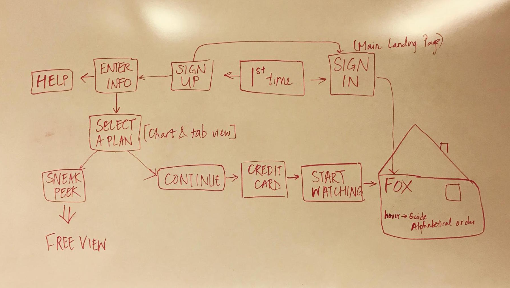
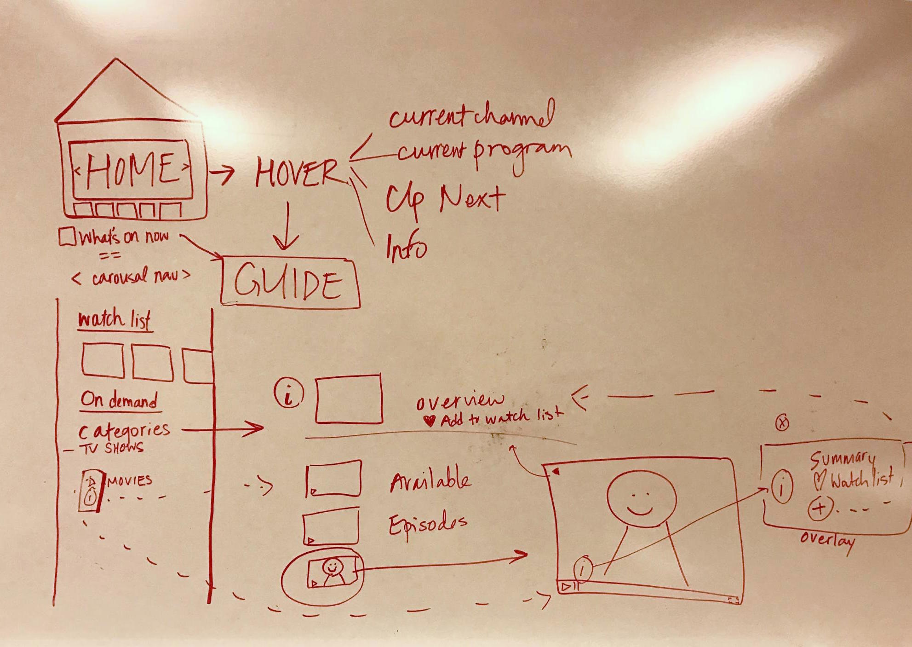
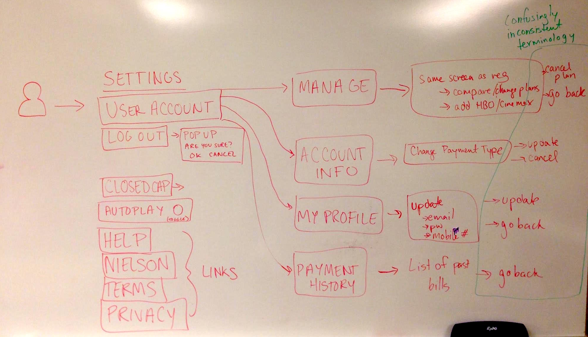
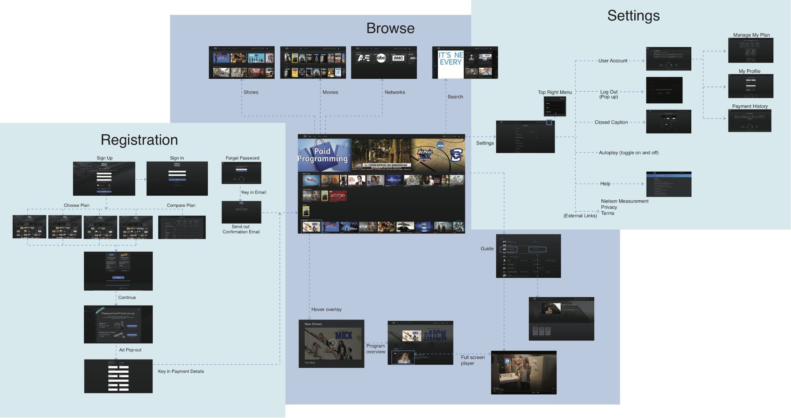
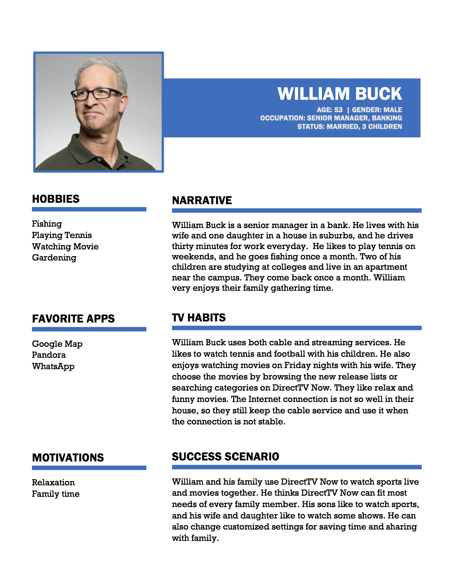
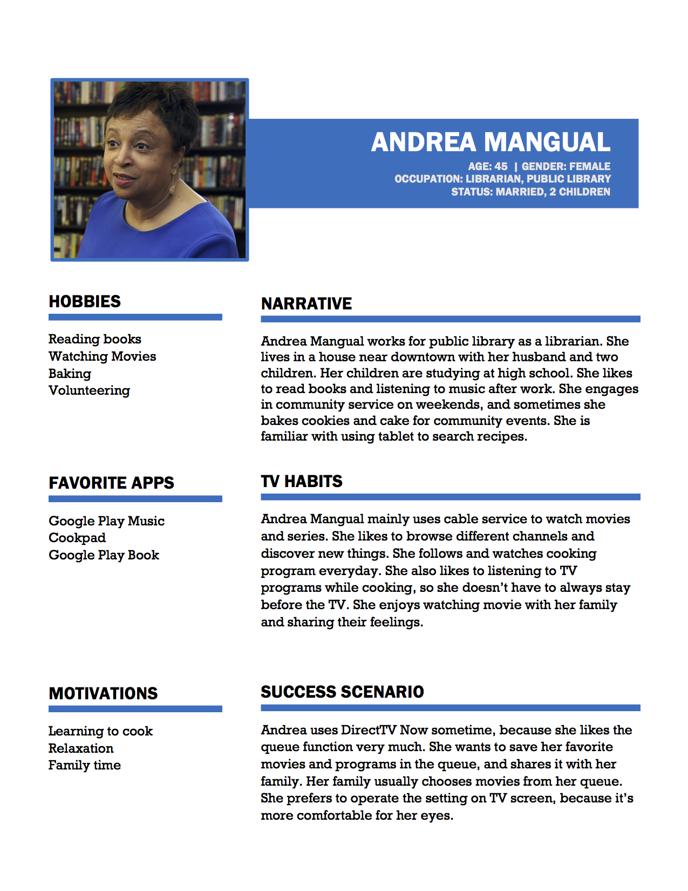
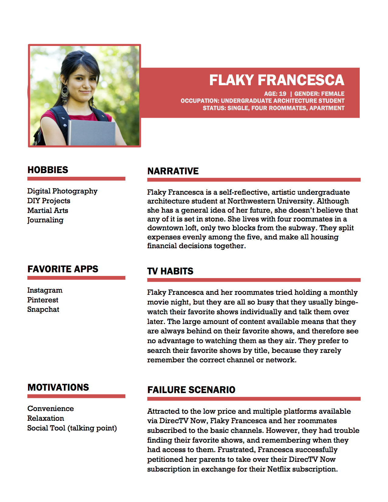
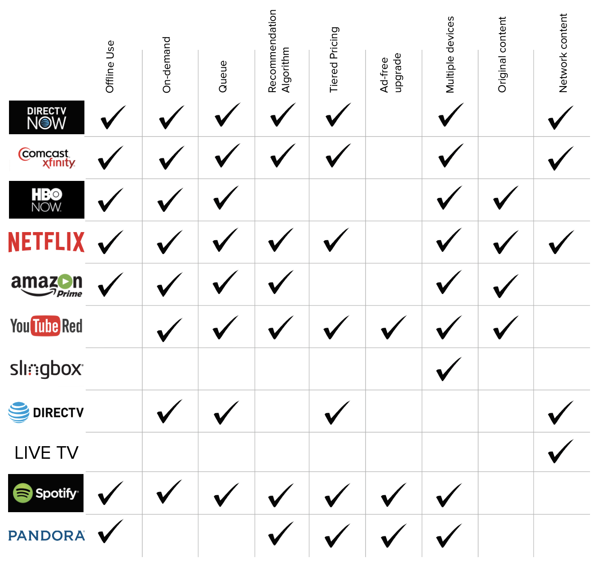
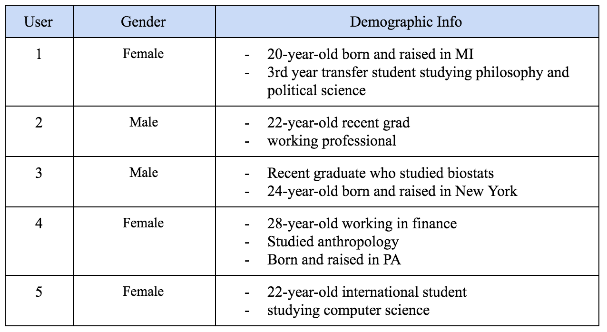

DIRECTV NOW
A needs assessment and usability evaluation of DirecTV Now's web platform.

I worked on a team of 5 student researchers to evaluate the newly launched DirecTV Now desktop streaming platform as a part of the Needs Assessment and Usability Evaluation course at UMSI. Over the course of the semester, we utilized a number of UX research methods to evaluate the system and develop recommendations for our client.
My Role: UX Researcher
Timeline: January – April 2017
Process:
Overview
DirecTV Now, which launched in November 2016, is a television streaming service provided by AT&T.
Our team was asked to conduct a needs assessment and usability evaluation of the product in order to better understand user retention and acquisition, primarily of two main user groups: “cord-nevers” and “cord-shavers.”
Cord-nevers are individuals who have never paid for TV, while cord-shavers are individuals who intend to leave their cable plans due to cost or other factors, but who are also interested in transitioning to other television platforms.
Interaction Map
Our team first created an interaction map of the system at a high level in order to better understand the user journey, and to identify pain points that we could investigate more deeply in interviews and usability tests.
  Finally, we clustered the system into three main sections: Registration, Browse, and Settings.
Insights
We uncovered several potential pain points:
- Navigation and search features available only for on-demand programming; there is no easy way to find the guide of live-streaming programs except through home page links, which are buried in the video player.
- Similarly, users can favorite on-demand programs, but there is no way to save or set reminders for live-streaming programs.
- Terminology is used inconsistently throughout the Browse and Settings system levels, which could lead to navigation issues or problems managing an account.
Interviews
Our group then conducted 5 semi-structured interviews, with each team member taking turns to act as interviewer.
We recruited individuals who were currently subscribed to cable or digital streaming services, and selected participants of a wide range of ages, professions, and household sizes.
Each interview was conducted over the phone, and lasted about 30 minutes each. Interviewers followed an interview protocol developed by the team, guided by the following two overarching questions:
- What factors lead users to subscribe to particular services?
- How do different types of interactions influence a user’s viewing experience as well as their decision to continue subscribing to a service?
Insights
We transcribed and coded our interviews, and clustered our insights to identify the following key findings:
- Content Selection
- Users seek updates and a comprehensive selection
- Users seek out content across multiple services
- Recommendation algorithms have potential to improve
- Users want previews of shows, but also delight in channel surfing
- Convenience, Accessibility, Mobility
- Users need steady connection and seek to preserve bandwidth
- Users want services that accommodate their schedule and habits
- Social Experiences
- Household dynamics contribute to viewing habits and needs
- Users share accounts with their family and friends
Personas
Using our interview findings, we created two personas and 1 anti-persona to guide us through our subsequent research.
  Comparative Evaluation
Next, we conducted a comparative evaluation to understand how DirecTV Now stacked up to its competitors. Our user interview findings facilitated the development of the following matrix, which evaluated 9 features across 10 competitors.
This matrix allowed us to not only track and compare the availability of common features, but also to develop a 2x2 space in which we compared the dimensions of content volume and mobility.
Content volume was calculated by aggregating the volume of on-demand content, original content, network content, and the number of titles or channels on a particular platform. Mobility was calculated by aggregating the ability to download content for offline viewing as well as the number of devices on which the platform can be used.
Heuristic Evaluation
Before moving on to our usability tests, our team conducted a heuristic evaluation (using Nielsen’s 10 heuristics for UI design) in order to identify the interface’s key strengths and weaknesses as they pertain to user experience.
Each member of our team individually assessed the DirecTV Now platform, and rated each heuristic using Nielsen's severity scale to rank the persistence and impact of each usability problem. Our team came together to discuss the primary issues we found and collaboratively prioritized the most salient issues discovered.
- Global navigation inconsistently structured, creating confusion and the potential for unnecessary click-throughs that impede the user process.
Severity Rating: 5
Recommendation: Design a consistent global navigation that recognizes the distinction between settings and user profile, as well as provides easy access to the live television programming guide. - Content availability is unclear, as is the duration of its availability, which reduces system flexibility and visibility of system status. Severity Rating: 4
Recommendation: Indicate content availability on hover over show title in order to avoid unnecessary click-through to the information page. - Live television autoplays upon logging into the DirecTV Now site, limiting user freedom and flexibility. Severity Rating: 4
Recommendation: Increase user freedom by providing more settings options, such as removing the live tv autoplay feature or limiting live tv autoplay channels to user favorites.
Usability Tests
Finally, we conducted usability tests with five participants from the target group of cord-nevers.
We wrote three tasks to cover the system in breadth, but also to validate that the pain points we had identified were indeed impediments to usability. Each test lasted about an hour. Each team member took a turn as a moderator and as the observer, with two team members present at each usability test.
Key Insights
- Browsing and information-seeking behavior is impeded by interface. All five participants experienced difficulty completing subtasks in which they were asked to find information about the series they were watching. Much of this confusion arose from unclear use of language and symbols in the interface, primarily related to the use of the “i” icon and the “Extras” link.
Recommendation: Facilitate information-seeking behavior by reducing cognitive load and improving clarity of visual signifiers. - Inconsistency in system navigation forces users to develop work-arounds. Poor visibility of transitions between video player and content pages makes navigation difficult.
Recommendation: Ensure global navigation is consistent across different system features and views. - Personalization features lack discoverability. TV shows automatically play upon opening the website, annoying users. Watchlist, favourite options, and personal recommendations lack of visibility of status.
Recommendation: Customize autoplay function and highlight the visibility of personalized features
Reflection
This project introduced me to a number of fundamental methods in the UX research toolkit, many of which I've since used in the research studies I've designed for projects like Maestro and Musi. Most importantly, it was a valuable opportunity to learn how to develop recommendations for designers based on our observations and analysis. While it takes experience and skill to understand when to use a particular method, how to conduct that method, and how to properly analyze the results, I learned that developing and prioritizing recommendations requires a deep understanding of both user and business stakeholders.